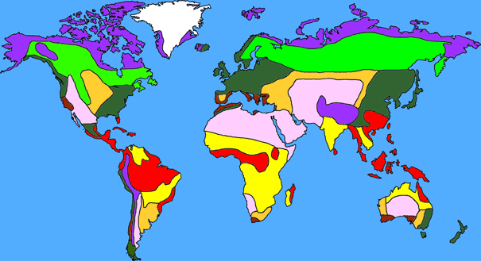

Life...
Evidence suggests that life on Earth has existed for about 3.7 billion years. All known life forms share fundamental molecular mechanisms, and based on these observations, theories on the origin of life attempt to find a mechanism explaining the formation of a primordial single cell organism from which all life originates. There are many different hypotheses regarding the path that might have been taken from simple organic molecules via pre-cellular life to protocells and metabolism.
Although there is no universal agreement on the definition of life, scientists generally accept that the biological manifestation of life is characterized by organization, metabolism, growth, adaptation, response to stimuli and reproduction. Life may also be said to be simply the characteristic state of organisms. In biology, the science of living organisms, "life" is the condition which distinguishes active organisms from inorganic matter, including the capacity for growth, functional activity and the continual change preceding death.


A diverse variety of living organisms (life forms) can be found in the biosphere on Earth, and properties common to these organisms�plants, animals, fungi, protists, archaea, and bacteria�are a carbon- and water-based cellular form with complex organization and heritable genetic information. Living organisms undergo metabolism, maintain homeostasis, possess a capacity to grow, respond to stimuli, reproduce and, through natural selection, adapt to their environment in successive generations. More complex living organisms can communicate through various means.
Ecosystems...

An ecosystem (also called as environment) is a natural unit consisting of all plants, animals and micro-organisms (biotic factors) in an area functioning together with all of the non-living physical (abiotic) factors of the environment.
Central to the ecosystem concept is the idea that living organisms are continually engaged in a highly interrelated set of relationships with every other element constituting the environment in which they exist. Eugene Odum, one of the founders of the science of ecology, stated: "Any unit that includes all of the organisms (ie: the "community") in a given area interacting with the physical environment so that a flow of energy leads to clearly defined trophic structure, biotic diversity, and material cycles (i.e.: exchange of materials between living and nonliving parts) within the system is an ecosystem.
The human ecosystem concept is then grounded in the deconstruction of the human/nature dichotomy, and the emergent premise that all species are ecologically integrated with each other, as well as with the abiotic constituents of their biotope.
A greater number or variety of species or biological diversity of an ecosystem may contribute to greater resilience of an ecosystem, because there are more species present at a location to respond to change and thus "absorb" or reduce its effects. This reduces the effect before the ecosystem's structure is fundamentally changed to a different state. This is not universally the case and there is no proven relationship between the species diversity of an ecosystem and its ability to provide goods and services on a sustainable level.
The term ecosystem can also pertain to human-made environments, such as human ecosystems and human-influenced ecosystems, and can describe any situation where there is relationship between living organisms and their environment. Fewer areas on the surface of the earth today exist free from human contact, although some genuine wilderness areas continue to exist without any forms of human intervention.
Biomes...
Biomes are terminologically similar to the concept of ecosystems, and are climatically and geographically defined areas of ecologically similar climatic conditions on the Earth, such as communities of plants, animals, and soil organisms, often referred to as ecosystems. Biomes are defined on the basis of factors such as plant structures (such as trees, shrubs, and grasses), leaf types (such as broadleaf and needleleaf), plant spacing (forest, woodland, savanna), and climate. Unlike ecozones, biomes are not defined by genetic, taxonomic, or historical similarities. Biomes are often identified with particular patterns of ecological succession and climax vegetation
Biogeochemical cycles...
Global biogeochemical cycles are critical to life, most notably those of water, oxygen, carbon, nitrogen and phosphorus.